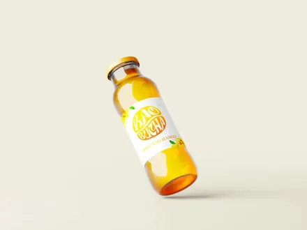
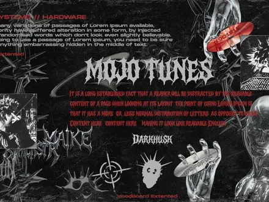
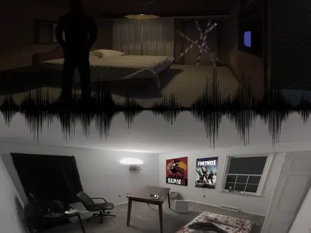
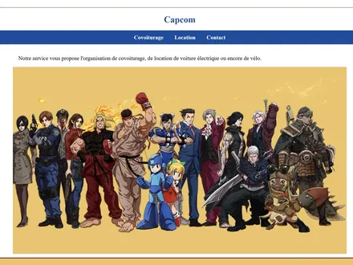
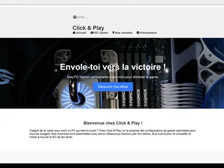
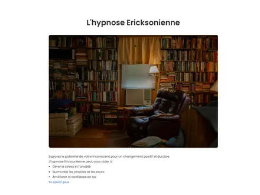
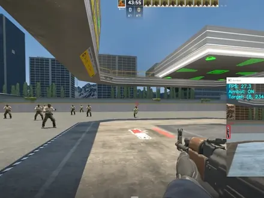
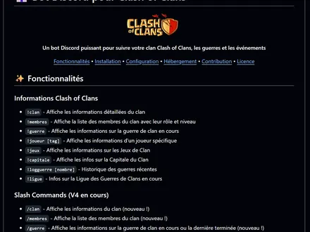
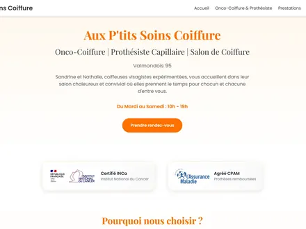

Benjamin LELEU
Création numérique · Web · Audiovisuel
Étudiant en 2e année de BUT MMI, parcours Création numérique, à l'IUT de Vélizy — UVSQ.
Job étudiant · samedi ou dimanche · 8 h max/semaineJe crée des expériences numériques qui comptent.
Je m'appelle Benjamin Leleu. En août 2026, je poursuis ma deuxième année de BUT MMI, parcours Création numérique, à l'IUT de Vélizy — UVSQ. Après une première année de MMI à Troyes, je construis un profil à la croisée du web, du design et de l'audiovisuel.
Je recherche aussi un job étudiant le week-end, le samedi ou le dimanche, dans la limite de 8 heures par semaine. Je privilégie le cinéma, la technologie, l'informatique, l'audiovisuel, la photo, l'audio, les jeux vidéo, les loisirs immersifs et l'accueil culturel.
const
benjamin = {
role:
"Création numérique, web et audiovisuel",
formation:
"BUT MMI · 2e année · UVSQ",
passion:
"Créer des expériences",
weekend:
"samedi || dimanche",
};
Travaux sélectionnés
Projets scolaires & personnels qui me définissent.

Kaobucha, Identité de Marque
SAE 1.02. Création fictive d'une marque de boisson énergisante naturelle et stratégie social media internationale.

Mojo Tunes, Rebranding
SAE 1.03. Refonte complète de l'identité visuelle d'une enseigne locale à Troyes.
Star Wars, Plateforme Web
SAE 1.05. Développement complet d'un site interactif en PHP avec intégration de base de données JSON.

Fiction Sonore (Podcast)
Écriture, enregistrement studio et sound design d'un podcast (Horreur/Humour).
Interview Vidéo, Joueur de Football
Réalisation et montage d'une interview vidéo : préparation, tournage, dérushage et étalonnage.

Site Covoiturage CapCom
Site de covoiturage développé en équipe. Intégration CSS et interface utilisateur.
Mini-jeu Éducatif, Apprendre Bash
Jeu vidéo pédagogique développé en Java pour apprendre les commandes Bash de façon ludique.

Site de Vente de PC
E-commerce moderne avec interface interactive et système de filtrage avancé.

Site d'Hypnothérapeute
Site vitrine professionnel. Design apaisant et prise de rendez-vous.

AI Aimbot, Projet Éducatif
IA par vision par ordinateur pour l'analyse de jeux. Apprentissage & recherche.

CoC Bot, Automatisation
Bot intelligent utilisant la vision par ordinateur. Machine Learning appliqué.

Aux Ptits Soins Coiffure
Site e-commerce pour salon de coiffure. Maintenance, évolution et support technique.
● En ligneGestion de Communautés en Ligne
Administration du serveur Discord officiel d'OpenAI (~480 000 membres) et animation d'une communauté de jeu ARK (~200 membres). Création de visuels et de photos de profil personnalisées.
TikTok @benitoow · 37k
Ancien compte TikTok d'édits vidéo réalisé sur CapCut. Arrêté par choix.
ArchivesTikTok Star Wars
Edits Star Wars. Montage Premiere Pro & After Effects. En croissance.
En coursOutils & Technologies
Développement
Design & Création
Audiovisuel
Outils
Soft Skills
Langues
Mon chemin
Bac STI2D, option SIN
Lycée Jean Perrin, Saint-Ouen-l'Aumône. Systèmes d'Information et Numérique. Bases technologiques solides.
BUT Informatique
IUT A de Villeneuve-d'Ascq, Université de Lille. Projets web et Java, avec une approche structurée de la programmation.
1re année de BUT MMI
IUT de Troyes, Université de Reims Champagne-Ardenne. Découverte des métiers du multimédia et de l'Internet.
2e année de BUT MMI, IUT de Vélizy — UVSQ
Parcours Création numérique. Une formation qui relie design, audiovisuel, communication et développement web.
Un projet, une équipe, un week-end ?
Pour une collaboration créative ou un job étudiant, je suis disponible le samedi ou le dimanche, jusqu'à 8 heures par semaine.